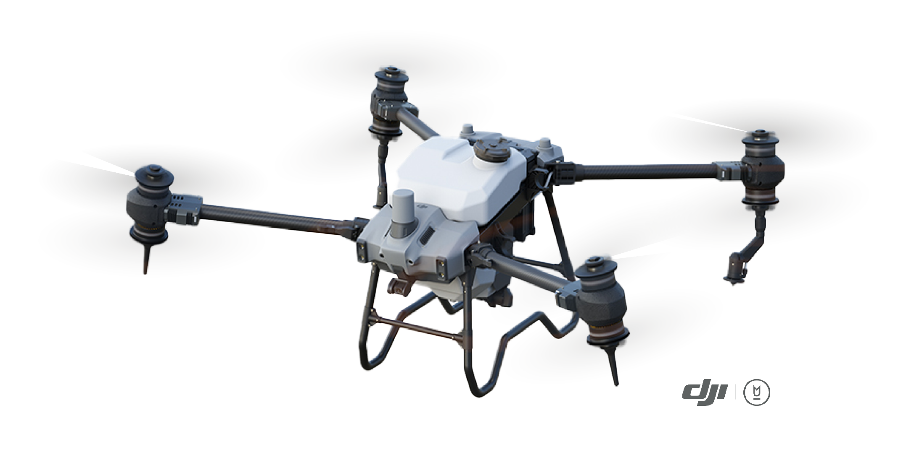

SERVICIOS
Ofrecemos diferentes servicios agrícolas
NUESTRO EQUIPO

DJI AGRAS T40
El AGRAS T40 está equipado con el revolucionario diseño Coaxial Twin Rotor, que le permite transportar una carga de rociado de 40 kg y una carga distribuida de 50 kg (70 L). El avión está integrado con un sistema de pulverización atomizado dual, DJI Terra, radar de matriz en fase activa y visión binocular. Es compatible con múltiples misiones, desde topografía, mapeo, pulverización y esparcimiento, lo que lo ayuda a lograr la máxima precisión en sus operaciones agrícolas.